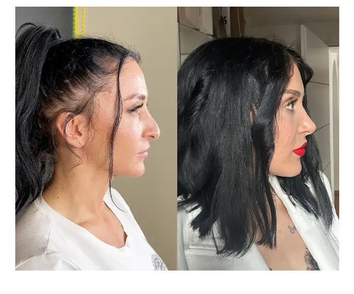
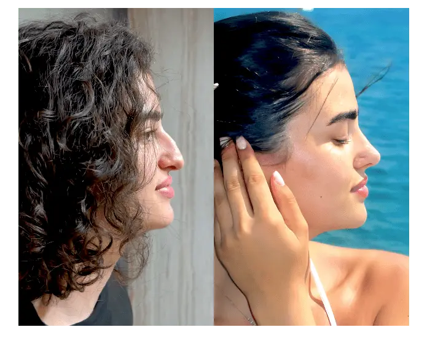

Transformation Through Rhinoplasty Nose Reshaping & Enhancement
What is Rhinoplasty?
Rhinoplasty, also known as a nose job, is a surgical procedure to change
the shape, size, or proportions of the nose for cosmetic or functional
reasons. Whether you’re seeking to improve facial harmony or address
breathing difficulties, our clinic combines advanced techniques with
personalized care, ensuring you achieve the refined, natural-looking
results you desire.
From subtle refinements to comprehensive reshaping, each procedure is tailored to complement your unique facial structure and aesthetic goals. Our experienced surgeons prioritize both form and function, using the latest technology to deliver results that enhance your confidence while maintaining a balanced, natural appearance.
With a focus on patient comfort, safety, and satisfaction, we guide you through every step of your rhinoplasty journey—from consultation to recovery—with expert support and compassionate care.
Before & After Results


Frequently Asked Questions
A surgical procedure to reshape or enhance the nose for aesthetic or
medical reasons.
Initial swelling reduces in 2 weeks, but final results settle over
6-12 months.
Discomfort can occur, but pain is usually mild and controlled with
medication.
Yes, results are long-lasting, but aging and lifestyle can affect
the nose’s appearance over time.
Costs vary depending on procedure complexity and location. Please
contact us for a consultation.
Clinic Address:
123 Harmony Ave, 3rd Floor
New Delhi, DL 110001 Hours: Mon–Sat, 10:00 AM – 7:00 PM